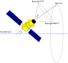
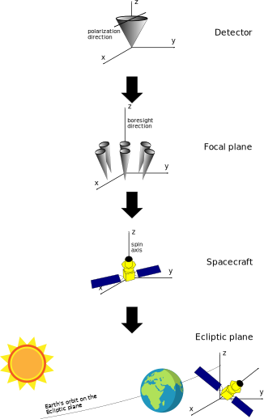
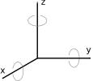
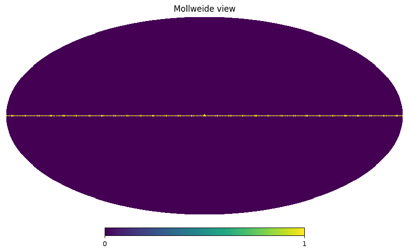

Scanning strategy#
The LiteBIRD Simulation Framework provides a set of tools to simulate the orbit of the spacecraft and compute the directions where each detector is looking at the sky as a function of time. The time stream of directions and orientations of each detector is usually called pointing information, and we will consistently use this jargon in the documentation.
Note that this chapter only deals with the direction along which some detector is looking, but the actual position/velocity of the spacecraft is optional when doing this calculation. The framework provides other facilities to compute this information, and they are described in Dipole anisotropy.
This chapter provides an in-depth explanation of how to use the facilities provided by the framework to compute the pointing information for any detector in one of the focal planes.
The motion of the spacecraft#
In the case of a space mission like LiteBIRD, the motion of the spacecraft and its structure decide where each detector is looking at each time. The following video depicts the kind of motion simulated by our framework:
(The animation was created using POV-Ray, and the files used to create it are available on GitHub .)
You can see that there are two rotations in the animation: the spacecraft spins quickly around its spin axis (grey axis), but this axis does not stand still: it performs a precession around the blue axis, which represents the Sun-Earth direction. (You should imagine the Earth on the left and the Sun on the far left.)
Note that the detectors are not necessarily aligned with the spin axis; in fact, the animation shows the actual direction of observation for two different detectors as two red and green lines: you can see that they are looking at two opposite sides of the spin axis. Every detector looks along its direction, but detectors belonging to the same instrument (e.g., LFT) look not far away from each other; it is customary to express their pointing directions relative to an «average» direction, called the boresight direction, which is the main optical axis of the instrument. In LiteBIRD, there are three instruments (LFT, MFT, HFT), so there should be three boresight directions; however, MFT and HFT share the same telescope, and thus it is customary to show only one boresight for both. This is the true meaning of the red and green axes in the video above: the red axis represents the «average» direction where LFT detectors are looking, and the green axis is the same for MFT/HFT.
The animation does not show a third rotation happening, which is the revolution of the spacecraft around the Sun, taking one year to complete. (Including it in the video would have been useless, as it is really slow when compared with the spin and precession!). Thus, the motion of the spacecraft is the composition of three rotations:
Rotation of the spacecraft around the spin axis (grey line);
Rotation (precession) of the spin axis around the Sun-Earth axis (blue line);
Yearly rotation of the Sun-Earth axis around the Sun.
If you think about it, you will realize that the following quantities can fully describe the kinematics of this motion:
The angle between the spin axis and the boresight direction(s), usually called β;
The angle between the spin and Sun-Earth axes is usually called α.
The speed of the rotation of the boresight direction around the spin axis;
The speed of the precession around the Sun-Earth axis, which is usually slower than the rotation speed;
They are sketched in the following diagram:
These parameters define the so-called scanning strategy, i.e., how the instruments observe the sky during the mission lifetime. The LiteBIRD Simulation Framework provides all the tools necessary to simulate the composition of these rotations, and it can produce pointing information from the synthetic description of the scanning strategy. Here is a complete example using the scanning strategy proposed for CORE ([3]), which is qualitatively similar to what is going to be used for LiteBIRD:
import litebird_sim as lbs
import astropy.units as u
import numpy as np
sim = lbs.Simulation(
start_time=0,
duration_s=60.0,
description="Simple simulation",
random_seed=12345,
)
# We now simulate the motion of the spacecraft over a time span
# of one minute (specified in the `duration_s` parameter above).
sim.set_scanning_strategy(
scanning_strategy=lbs.SpinningScanningStrategy(
spin_sun_angle_rad=np.deg2rad(30), # CORE-specific parameter
spin_rate_hz=0.5 / 60.0, # Ditto
# We use astropy to convert the period (4 days) in
# seconds
precession_rate_hz=1.0 / (4 * u.day).to("s").value,
)
)
# Here we specify the β angle of the focal plane of
# the instrument
sim.set_instrument(
lbs.InstrumentInfo(
name="core",
spin_boresight_angle_rad=np.deg2rad(65),
),
)
# We include a fake boresight detector `det`, belonging
# to the instrument `core` (unlike LiteBIRD, CORE had only one focal
# plane and one instrument)
det = lbs.DetectorInfo(name="foo", sampling_rate_hz=10)
# By default, `create_observations` creates just *one* observation
obs, = sim.create_observations(detectors=[det])
# Prepare the quaternions needed to compute the pointings, i.e.,
# the direction in the sky where the detector is looking at as
# a function of time
sim.prepare_pointings()
# `get_pointings()` returns both the pointing matrix and the
# HWP angle; we ignore the latter with `_`, as we do not have
# a HWP here. The pointing matrix contains the angles (θ, φ, ψ)
# for each sample in the TOD and each detector.
pointings, _ = obs.get_pointings(0)
print("Shape:", pointings.shape)
print("Pointings:")
print(np.array_str(pointings, precision=3))
Shape: (600, 3)
Pointings:
[[ 2.182 -0. -1.571]
[ 2.182 -0.006 -1.576]
[ 2.182 -0.012 -1.582]
...
[ 0.089 -2.967 -1.738]
[ 0.088 -3.021 -1.687]
[ 0.087 -3.075 -1.635]]
We explain all the details of this code in the following sections, so for now, keep in mind the overall shape of the code:
Once we set the duration of the simulation (one minute in the example above), we call the method
Simulation.set_scanning_strategy(), which forces the framework to compute how the orientation of the spacecraft with respect to the sky sphere evolves with time. This method produces a set of quaternions, which encode the result of the composition of all the rotations (spin, precession, revolution around the Sun) described above; LBS saves these quaternions in thespin2ecliptic_quatsfield of thesimclass. For more information about quaternions, see Quaternions .When the simulation code needs to determine where a detector is pointing to (the detector
detin our example), it uses the quaternions to retrieve (1) the coordinates on the Sky sphere, and (2) the orientation angle (ψ). LBS computes both quantities in the Ecliptic reference frame using the sampling rate of the detector, which in our example is 10 Hz (i.e., ten samples per second). In the example above, this is done by the functionget_pointings().The method
Observation.get_pointings()returns an array with either 2 or 3 fields depending on the argument passed:if the caller passes an integer, LBS interprets this as the index of the detector in the observation and returns a
(N, 3)matrix where the first column contains the colatitude \(\theta\), the second column the longitude \(\phi\), and the third column the orientation angle \(\psi\). All the angles are expressed in radians.if the caller passes a list of indices, LBS interprets it as a list of detectors in the observation for which the caller wants to compute the pointing. It returns a
(D, N, 3)matrix where D represents the detector index, N the index of the sample, and the three final columns are the same described in the first case.if the caller passes the string “all”, LBS returns a
(D, N, 3)matrix containing the pointing information for all the detectors in the observation.
These angles are expressed in the Ecliptic Coordinate System, where the Equator is aligned with the Ecliptic Plane of the Solar System.
Computing the orientation of the spacecraft#
To compute where a detector is looking at the sky sphere, there is a number of transformations that need to be carried out:
We start from the detector reference frame, where the main beam of the radiation pattern is aligned with the z axis and is oriented using the x axis as the reference axis. (In other words, the x axis provides a reference frame for asymmetric beams.)
The next reference frame is the boresight, and to convert from the
detector reference frame to the boresight there is a rotation, which
is encoded in a rotation quaternion that is saved in the IMO. The
framework implements the class RotQuaternion to encode a
rotation quaternion; this class can also model time-varying rotations,
which can be useful to simulate vibrations and wobbles in the optical
structure of the instruments.
Next, we move from the reference frame of the boresight to that of the
spacecraft. The class InstrumentInfo encodes the information
about the placement of the boresight with respect to the spin axis.
After this transformation, the spin axis is aligned with the z axis.
The next transformation goes from the spacecraft to the Ecliptic reference frame; the Ecliptic is on the xy plane, and the z axis points towards the Ecliptic North Pole. In this case, the framework provides two ways to compute the transformation:
The revolution of the Earth around the Sun is modeled using a plain circular motion, and the starting position is arbitrary; this mode is triggered whenever the time is tracked using floating-point numbers (i.e., the parameter start_time in the constructor of
Simulationis afloat).The proper motion of the Earth around the Sun is computed using ephemeridis tables; the calculation is much slower, but the result enables to properly simulate the observation of moving objects in the Solar System, like planets or asteroids. In this case, the parameter start_time must be an instance of the class
astropy.time.Time. In the example above, we would enable the computation of the proper motion of the Earth with the following minor change:import astropy.time sim = lbs.Simulation( # Turn on full computation of the Earth orbit around the Sun start_time=astropy.time.Time("2020-01-01"), duration_s=60.0, description="Simple simulation", random_seed=12345, )
You should compute the proper motion of the Earth around the Sun only if you need to, as it makes the computation of the pointing information 10÷100 times slower.
From quaternions to detector pointings#
To compute the pointing information for a detector, the quaternions
computed through the call to Simulation.set_scanning_strategy()
are not enough, as they only tell how to convert a vector from the
spin axis reference frame to the Ecliptic reference frame. We need
two more quaternions that tell how to convert from the reference frame
of the detector to that of the spin axis:
The first quaternion describes how the detector reference frame (with the z axis aligned with the main axis of the radiation pattern) can be converted to the reference frame of the focal plane (with the z axis aligned with the boresight). This information is included in the IMO and is properly initialized if you call
DetectorInfo.from_imo(). If you do not specify any quaternion, the constructor forDetectorInfowill assume that the detector is looking at the boresight. It will thus create a defaultRotQuaternionobject, which corresponds to the identity quaternion \((0 0 0 1)\); this is the case of the simple example we presented above.The second quaternion describes how to convert the reference frame of the focal plane (with the z axis aligned with the boresight) to the reference frame of the spacecraft (where the z axis is aligned with its spin axis). This quaternion is stored in the field
bore2spin_quatof the classInstrumentInfo, and it is initialized when you call the methodSimulation.set_scanning_strategy().
The LiteBIRD Simulation Framework recomputes the orientation of the
spacecraft with a regular spacing in time (the default is one minute).
However, pointings need to be known at the same sampling frequency
used by the detector, which is usually much higher than the frequency
used to compute the quaternions (in our example above, the sampling
frequency of detector det was 10 Hz, but the sampling frequency of
the quaternions was 1/60 Hz). Since the framework uses quaternions to
encode the orientation of the spacecraft, oversampling them to the
sampling frequency of the detector is just a matter of applying a
spherical linear interpolation (abbr. slerp), according to the following
figure:
To be sure to include an additional quaternion after the last
sample, like in the figure above, the framework provides the static
method ScanningStrategy.optimal_num_of_quaternions(), which
computes how many quaternions are needed to cover some period with a
given interval between quaternions. For instance, if our simulation
lasts 100 s and we want one quaternion every minute, then the number
of quaternions needed is 3: one at \(t = 0\), one at \(t =
60\,\mathrm{s}\), and one at \(t = 120\,\mathrm{s}\), so that the
latter two can be interpolated for the samples in the range
\(60\,\mathrm{s} \leq t \leq 100\,\mathrm{s}\). Here is how the
function works:
print(lbs.ScanningStrategy.optimal_num_of_quaternions(
time_span_s=100,
delta_time_s=60,
))
3
When using MPI, the relatively small size in memory of the quaternions
(the thick black lines in the figure) enables the framework to keep
a duplicate of the list in all the MPI processes. This is unlike
what happens with the data in TODs (the thin gray lines), which are
split in several blocks inside the Observation class.
Note
Slerp assumes a rotation with constant angular speed and axis between consecutive quaternions. Thus, it only approximates the proper composition of all the rotations (spin, precession, revolution around the Sun) that we discussed above. However, remember that the actual spacecraft will follow a scanning strategy that will be more complex than the one described by our geometrical model because of many unavoidable non-idealities in a spacecraft. The approximation of the «slerp» operation is thus unlikely to be relevant.
Once LBS has all the quaternions sampled at the proper sampling rate,
it can compute the direction of the detector on the sky and its
orientation angle through Observation.get_pointings(). The
calculation works as follows:
The direction is the vector \(\vec d = R \hat e_z\), where \(R\) is the overall rotation from the detector reference frame to the Ecliptic reference frame, and \(\hat e_z = (0, 0, 1)\) is the one-length vector aligned with the z axis.
The orientation angle is given by the angle between the North direction passing through the vector \(\vec d\) (i.e., along the meridian of \(\vec d\)) and the vector \(\vec p = R \hat e_x\), where \(R\) is the same as above and \(\hat e_x = (1, 0, 0)\), as shown in the following figure (note that \(\hat e_x\) has been drawn twice because the one in the upper side represents the orientation direction in the detector reference frame):
The purpose of the method Simulation.prepare_pointings(), used
in the example at the beginning of this chapter, is to combine the
quaternions that model the transformations between the many reference
frames used in the framework. The method
Observation.get_pointings() uses these quaternions to compute
the actual pointing directions and the HWP angle on the fly.
To save memory,:meth:.Observation.get_pointings does not save the pointings in a variable once it has calculated their value, and so they must be recomputed every time you need them. However, in some applications, pointings need to be accessed several times during a simulation, and these repeated computations can introduce a noticeable slowdown in the code.
If you want to trade speed with memory occupation, you can use the
function precompute_pointings() to compute all the pointings at
once and save them into every Observation objects. This
function fills the fields pointing_matrix and hwp_angle. The
datatype for the pointings is specified by pointings_dtype. This
can be done either with the low level functions
obs = sim.create_observations(detectors=[det])
lbs.prepare_pointings(obs,sim.instrument,sim.spin2ecliptic_quats)
lbs.precompute_pointings(obs, pointings_dtype=np.float64)
or with the methods of the Simulation:
sim.create_observations(detectors=[det])
sim.prepare_pointings()
sim.precompute_pointings(pointings_dtype=np.float64)
How the boresight is specified#
As LiteBIRD includes three focal planes and two telescopes, the specification of the boresight requires some care. In [3] and [4], the boresight direction is encoded using just one number, the angle between the boresight and the spin axis. However, both papers deal with spacecrafts hosting only one focal plane.
The orientation of the boresight direction is specified using three angles:
The ψ angle encodes the rotation of the focal plane with respect to the boresight direction itself, and it is ideally 0°;
The angle between the boresight direction and the spin axis is usually notated with the symbol β (among the three, this is the most crucial number: it is 65° for CORE, 69° for PICO);
Finally, the boresight can be rotated by an angle φ around the spin axis; this is important only when you have more than one focal plane. For LiteBIRD, \(\phi_\text{LFT} - \phi_\text{MHFT} \approx 180^\circ\).
Interpretation of pointings#
With «pointing», we refer to two different concepts:
The direction where the detector is looking at;
The orientation of the detector while looking at the sky.
Theoretically, one can encode the direction as a one-length vector
(x, y, z) or as a couple of angles. LBS adopts the second option
to save memory, and it encodes directions using the colatitude (i.e.,
90° minus the latitude) and the longitude, commonly indicated with the
letters θ (colatitude) and φ (longitude).
The orientation of the detector (second point above) can be expressed either as a vector tangent to the sky sphere or as an angle calculated with respect to the meridian/parallel going through the point the detector is looking at. Again, to reduce memory usage, our framework only encodes the angle.
The method Observation.get_pointings() returns two matrices: a
“pointing matrix”, laid in memory as a \((N, 3)\) matrix, where
\(N\) is the number of samples in the timeline, and the last
dimension holds the colatitude, longitude, and orientation (in
radians). The second matrix contains the angle of the HWP. Let’s
visualize the position of these pointings on a Healpix map:
import healpy, numpy as np
import matplotlib.pylab as plt
nside = 64
pixidx = healpy.ang2pix(nside, pointings[:, 0], pointings[:, 1])
m = np.zeros(healpy.nside2npix(nside))
m[pixidx] = 1
healpy.mollview(m)

Custom scanning strategies#
This section explains how LBS can model scanning strategies other than the nominal «spinning» one. You will need to understand the functions provided by the framework to deal with quaternions.
The framework uses a right-handed coordinate system, like the one shown in figure:
where the grey arrows indicate the verse of positive rotations. (They follow the usual right-hand rule: point your thumb along the axis and the other fingers will point towards the positive direction of the rotation.)
A simple scanning strategy#
We are now ready to discuss implementing other types of scanning
strategies. There are plenty of reasons why one would like to go
beyond the class SpinningScanningStrategy:
You want to study the effect of non-idealities, like second-order effects caused by contractions/dilations in the mechanical structure of the telescope that make the angle between the spin axis and the boresight vary with time.
You are thinking about how to make dedicated observations of some celestial source (e.g., the Crab Nebula) to calibrate the instruments.
To define a new scanning strategy, we define a descendant of the
ScanningStrategy class, an Abstract Base Class (ABC); the only mandatory
method is ScanningStrategy.generate_spin2ecl_quaternions(),
which takes as inputs the start time, the length of the simulation,
and the time interval to be used between consecutive quaternions. The
method must return an instance of the RotQuaternion,
containing the computed sequence of quaternions.
We will code here a straightforward scanning strategy, which does not involve anything fancy: the spacecraft will spin around the Sun-Earth axis, and the boresight direction will be along the same spin axis. Thus, the boresight detector will see only the points along the Ecliptic plane. This scanning strategy is scientifically useless, but it is simple enough to be implemented in a few lines of code:
The transformation from boresight to the spin axis reference frame is the identity;
There is no precession of the spin axis; therefore, the latter stays on the Ecliptic axis;
The only rotation is caused by the revolution of the Sun-Earth axis around the Sun, which is implemented as a rotation on the xy plane, i.e., around the z axis.
The following code implements our mock scanning strategy:
import litebird_sim as lbs
from litebird_sim import RotQuaternion
import astropy
from typing import Union
class SimpleScanningStrategy(lbs.ScanningStrategy):
def generate_spin2ecl_quaternions(
self,
start_time: Union[float, astropy.time.Time],
time_span_s: float,
delta_time_s: float,
) -> RotQuaternion:
# Compute how many quaternions are needed to cover
# the time interval specified by "time_span_s"
num_of_quaternions = (
lbs.ScanningStrategy.optimal_num_of_quaternions(
time_span_s=time_span_s,
delta_time_s=delta_time_s,
)
)
# Make room for the quaternions
spin2ecliptic_quats = np.empty((num_of_quaternions, 4))
# We compute the times when the quaternions need to be
# calculated. Note that ScanningStrategy returns two
# arrays ("time" and "time_s"), but we neglect the second
# because we don't need it in this very simple case
(time, _) = lbs.ScanningStrategy.get_times(
start_time=start_time,
delta_time_s=delta_time_s,
num_of_quaternions=num_of_quaternions,
)
# Compute the angle on the Ecliptic plane between the x
# axis and the Sun-Earth axis, possibly using AstroPy
sun_earth_angles_rad = (
lbs.calculate_sun_earth_angles_rad(time)
)
# This code is *not* optimized: in a real-world case,
# you'll probably want to use Numba instead of the
# following "for" loop
for i in range(num_of_quaternions):
# Rotate by 90° around the y axis (move the boresight
# to the Ecliptic xy plane)
spin2ecliptic_quats[i, :] = lbs.quat_rotation_y(np.pi / 2)
# Simulate the revolution of the spacecraft around
# the Sun using the angles computed above
lbs.quat_left_multiply(
spin2ecliptic_quats[i, :],
*lbs.quat_rotation_z(sun_earth_angles_rad[i]),
)
# Return the quaternions wrapped in an instance of
# "RotQuaternion"
return lbs.RotQuaternion(
start_time=start_time,
sampling_rate_hz=1.0 / delta_time_s,
quats=spin2ecliptic_quats,
)
To test the class SimpleScanningStrategy, we write some code
similar to the example presented at the beginning of this section.
However, we cannot simulate for just one hour, as it would not be
enough to see any change in the pointing direction: the only thing
that changes as time passes is the position of the Earth on the
Ecliptic plane, and it takes 365 days to make one revolution.
Therefore, we extend the length of the simulation to 365 days. Of
course, there is no need to use a high sampling frequency in our
example, so we use here just one sample per day; for the same reason,
instead of computing one quaternion every minute, we compute one
quaternion every 30 days:
import astropy.units as u
import healpy
import numpy as np
sim = lbs.Simulation(
start_time=0,
duration_s=(365 * u.day).to("s").value,
description="Simple simulation",
random_seed=12345,
)
sim.set_scanning_strategy(
scanning_strategy=SimpleScanningStrategy(),
delta_time_s=(30 * u.day).to("s").value
)
det = lbs.DetectorInfo(
name="foo",
sampling_rate_hz=1.0 / ((1.0 * u.day).to("s").value),
)
(obs,) = sim.create_observations(detectors=[det])
lbs.prepare_pointings(obs, lbs.InstrumentInfo(), sim.spin2ecliptic_quats)
pointings, _ = obs.get_pointings("all")
m = np.zeros(healpy.nside2npix(64))
pixidx = healpy.ang2pix(64, pointings[0, :, 0], pointings[0, :, 1])
m[pixidx] = 1
healpy.mollview(m)
Here is the result: we are indeed scanning the Ecliptic plane!
Observing point sources in the sky#
It is helpful to simulate the observation of point sources in the sky, both for a scientific purpose and for instrument calibration. For instance, an essential task in the calibration of a CMB space experiment is the estimation of the radiation pattern \(\gamma(\theta, \phi)\) for each detector (sometimes \(\gamma\) is called the beam function). One can do this task through the observation of a bright point source, like one of the outer planets (Mars, Jupiter, Saturn, etc.): assuming that the source is pointlike and neglecting every other emission from the sky, the response measured by a detector is proportional to the radiation pattern \(\gamma(\theta, \phi)\), where the angles \(\theta, \phi\) identify the position of the planet in the reference frame of the detector, i.e., where \(\theta = 0\) is the direction of the main beam axis.
You can use the functions described in this chapter to analyze how
detectors will observe point sources in the sky, properly taking into
account proper motions of the sources (this applies to Solar System
objects, like planets and comets). The library provides the functions
get_ecl2det_quaternions(), which has the same syntax as
get_pointings() but returns a matrix with shape (N, 4)
containing the N quaternions that transform from the Ecliptic
reference frame to the detector. Thus, you can use this method to
estimate how far from the main beam axis a celestial object is and its
orientation with respect to the orientation of the detector.
Here we show a simple example; the first part is identical to the
examples shown above (using the same scanning strategy as for CORE),
but here we employ AstroPy to compute the Ecliptic coordinates of
Jupiter during the simulation and convert them in the reference frame
of the boresight detector using get_ecl2det_quaternions():
import numpy as np
import litebird_sim as lbs
import astropy.time, astropy.units as u
from astropy.coordinates import (
ICRS,
get_body_barycentric,
BarycentricMeanEcliptic,
solar_system_ephemeris,
)
sim = lbs.Simulation(
# We use AstroPy times here!
start_time=astropy.time.Time("2020-01-01T00:00:00"),
duration_s=60.0,
description="Simple simulation",
random_seed=12345,
)
sim.set_scanning_strategy(
scanning_strategy=lbs.SpinningScanningStrategy(
spin_sun_angle_rad=np.deg2rad(30),
spin_rate_hz=0.5 / 60.0,
precession_rate_hz=1.0 / (4 * u.day).to("s").value,
)
)
sim.set_instrument(
lbs.InstrumentInfo(
name="core",
spin_boresight_angle_rad=np.deg2rad(65),
),
)
det = lbs.DetectorInfo(name="foo", sampling_rate_hz=10)
obs, = sim.create_observations(detectors=[det])
#################################################################
# Here begins the juicy part
solar_system_ephemeris.set("builtin")
# The variable "icrs_pos" contains the x,y,z coordinates of Jupiter
# in the ICRS reference frame for each sample time in the
# observation.
icrs_pos = get_body_barycentric(
"jupiter",
obs.get_times(astropy_times=True),
)
# Convert the ICRS r.f. into the barycentric mean Ecliptic r.f.,
# which is the reference frame used by the LiteBIRD simulation
# framework
ecl_vec = (ICRS(icrs_pos)
.transform_to(BarycentricMeanEcliptic())
.cartesian
.get_xyz()
.value
)
# The variable ecl_vec is a 3×N matrix containing the vectors.
# We normalize them so that each has length one (using the L_2
# norm, hence ord=2)
ecl_vec /= np.linalg.norm(ecl_vec, axis=0, ord=2)
# Convert the matrix to a N×3 shape
ecl_vec = ecl_vec.transpose()
# Calculate the quaternions that convert the Ecliptic
# reference system into the detector reference system
quats = lbs.get_ecl2det_quaternions(
obs,
sim.spin2ecliptic_quats,
bore2spin_quat=sim.instrument.bore2spin_quat,
detector_quats=[det.quat],
)
# Make room for the xyz vectors in the detector reference frame
det_vec = np.empty_like(ecl_vec)
# Do the rotation!
lbs.all_rotate_vectors(det_vec, quats[0], ecl_vec)
print(det_vec)
[[ 0.57053937 0.07219102 -0.81809124]
[ 0.57038372 0.06957116 -0.8184267 ]
[ 0.57023386 0.0669494 -0.81874973]
...
[ 0.99293109 -0.0800506 0.08763421]
[ 0.99310516 -0.07743726 0.08800916]
[ 0.99327345 -0.07482179 0.08837171]]
Again, the vectors printed by this script are in the reference frame
of the detector, where the vector [0 0 1] indicates the main axis
of the detector. We can inspect how close Jupiter moves to the main
beam axis during the simulation if we convert the set of (x, y, z)
vectors into the angles \(\theta\) (colatitude) and \(\phi\)
(longitude), as the colatitude is simply the angular distance from the
main beam axis (\(\theta = 0\)):
import healpy
theta, phi = healpy.vec2ang(det_vec)
import matplotlib.pylab as plt
times = obs.get_times()
plt.plot(times - times[0], np.rad2deg(theta))
plt.xlabel("Time [s]")
plt.ylabel("Angular separation [deg]")
We see that Jupiter is ~10° away from the beam axis after ~30 seconds since the start of the simulation.
API reference#
- class litebird_sim.scanning.RotQuaternion(quats: _SupportsArray[dtype[Any]] | _NestedSequence[_SupportsArray[dtype[Any]]] | bool | int | float | complex | str | bytes | _NestedSequence[bool | int | float | complex | str | bytes] | RotQuaternion | None = None, start_time: float | Time | None = None, sampling_rate_hz: float | None = None)#
Bases:
objectA matrix of quaternions sampled uniformly over time that encode rotations
This class is used to hold quaternions that represent the rotation from the reference frame of the LiteBIRD spin axis to the Ecliptic reference frame. All the quaternions are normalized, i.e., they encode a rotation in 3D space.
The class has the following members:
quatsis a NumPy array of shape(N × 4), containing theN(normalized) quaternions. All the quaternions are guaranteed to be normalized.start_timeis either a floating-point number or anastropy.time.Timeobject. It can beNoneif and only if there is just one quaternion inquats.sampling_rate_hzis the sampling frequency of the quaternions, in Hertz. It can beNoneif and only if there is just one quaternion inquats.
- conj()#
- is_close_to(other: RotQuaternion) bool#
- nbytes()#
Return the number of bytes allocated for the quaternions
- slerp(start_time: float | Time, sampling_rate_hz: float, nsamples: int)#
Oversample the quaternion using a “slerp” operation
This method combines the spin-axis-to-Ecliptic quaternions in
self.quatwith two additional rotations (detector_quat, bore2spin_quat), representing the transformation from the reference frame of a detector to the boresight reference frame and the transformation from the boresight to the spin reference frame. The result is a quaternion that directly transforms the reference frame of the detector to Ecliptic coordinates.Usually, the parameter detector_quat is read from the IMO, and the parameter bore2spin_quat is calculated through the class
InstrumentInfo, which has the fieldbore2spin_quat. If all you have is the angle β (in radians) between the boresight and the spin axis, just passquat_rotation_y(β)here.As this kind of quaternion is used to compute the pointings of a detector, which are used in map-making, it applies a «slerp» operation on the quaternion, oversampling them to the sampling frequency of the detector, expressed through the parameter sampling_rate_hz.
The parameters time0 and nsamples specify which is the time interval that needs to be covered by the quaternions computed by this method. The type of the parameter time0 must match that of self.start_time.
- class litebird_sim.scanning.ScanningStrategy#
Bases:
ABCA class that simulate a scanning strategy
This is an abstract base class; you should probably use
SpinningScanningStrategy, unless you are interested in simulating other kinds of scanning strategies. If this is the case, refer to the documentation.- abstract generate_spin2ecl_quaternions(start_time: float | Time, time_span_s: float, delta_time_s: float) RotQuaternion#
Generate the quaternions for spin-axis-to-Ecliptic rotations
This method simulates the scanning strategy of the spacecraft assuming that the mission begins at some time start_time and lasts for time_span_s seconds. The purpose of the function is to compute the orientation of the spacecraft once every delta_time_s seconds for the whole duration of the mission; the orientation is expressed as a quaternion that encodes the rotation from the reference frame of the spacecraft’s spin axis (aligned with the y axis) to the reference frame of the Ecliptic Coordinate System.
The function returns a
TimeDependentQuaternionobject that fully covers the time interval between start_time and start_time + time_span_s: this means that an additional quaternion after the timet_end = start_time + time_span_smight be appended.- Parameters:
start_time (Union[float, astropy.time.Time]) – start time of the simulation. If it is a floating-point number, it is arbitrary and can usually be set to 0.0; otherwise, it must be a
astropy.time.Timeobject, and in this case a more precise computation of the orientation of the spacecraft is used. Depending on the duration of the simulation, the second case can be a few orders of magnitude slower: it should be used only when the simulation needs to track the position of moving objects (e.g., planets).time_span_s (float) – interval of time that needs to be simulated, in seconds. These seconds are added to start_time, and their meaning depends on its type: if start_time is a float, you should consider the duration as a sidereal time, but if it’s a astropy.time.Time time, time_span_s is expressed as a Solar time.
delta_time_s (float) – for efficiency, quaternions are not sampled at the same sample rate as the scientific data, but at a much lower rate. The default should be good for all the most common cases, but you can tune it with this parameter.
- static get_times(start_time: float | Time, delta_time_s: float, num_of_quaternions: int)#
Return a vector of equally-separated times
Depending on the type of the parameter start_time (either a
floator aastropy.time.Timeinstance), return a vector of times that mark the instant when a quaternion must be computed by the class.The class returns a 2-element tuple, containing (1) the time expressed using the same type as start_time (either
floatorastropy.time.Time), and (2) a vector containing the time measured in seconds. The latter is useful when your scanning strategy depends on the time for the computation of angles and rotation, e.g., if you need to compute \(2\pi\nu t\).
- static optimal_num_of_quaternions(time_span_s: float, delta_time_s: float) int#
Return the number of quaternions to compute
Given a time span and a time interval between consecutive quaternions, this static method computes how many quaternions are needed to properly cover the time span.
- class litebird_sim.scanning.SpinningScanningStrategy(spin_sun_angle_rad, precession_rate_hz, spin_rate_hz, start_time=<Time object: scale='tdb' format='iso' value=2027-01-01 00:00:00.000>)#
Bases:
ScanningStrategyA class containing the parameters of the sky scanning strategy
This class is used to hold together the parameters that define the nominal scanning strategy of the LiteBIRD spacecraft. It’s a simple scanning strategy that closely matches the ones proposed for other CMB experiments from space like CORE and Pico: a spinning motion of the spacecraft around some axis, composed with a precession motion around the Sun-Earth-spacecraft axis (assuming that the spacecraft flies around the L_2 point of the Sun-Earth system).
The constructor accepts the following parameters:
spin_sun_angle_rad: angle between the spin axis and the Sun-LiteBIRD direction (floating-point number, in radians)
precession_rate_hz: the period of the precession rotation (floating-point number, in minutes)
spin_rate_hz: the number of rotations per minute (RPM) around the spin axis (floating-point number)
start_time: an
astropy.time.Timeobject representing the start of the observation. It’s currently unused, but it is meant to represent the time when the rotation starts (i.e., the angle ωt is zero).
These fields are available once the object has been initialized.
You can create an instance of this class using the class method
from_imo(), which reads the parameters from the IMO.- all_spin_to_ecliptic(result_matrix, sun_earth_angles_rad, time_vector_s)#
- static from_imo(imo: Imo, url: str | UUID)#
Read the definition of the scanning strategy from the IMO
This function returns a
SpinningScanningStrategyobject containing the set of parameters that define the scanning strategy of the spacecraft, i.e., the way it observes the sky during the nominal mission.- Parameters:
Example:
imo = Imo() sstr = SpinningScanningStrategy.from_imo( imo=imo, url="/releases/v1.0/satellite/scanning_parameters/", ) print(sstr)
- generate_spin2ecl_quaternions(start_time: float | Time, time_span_s: float, delta_time_s: float) RotQuaternion#
Generate the quaternions for spin-axis-to-Ecliptic rotations
This method simulates the scanning strategy of the spacecraft assuming that the mission begins at some time start_time and lasts for time_span_s seconds. The purpose of the function is to compute the orientation of the spacecraft once every delta_time_s seconds for the whole duration of the mission; the orientation is expressed as a quaternion that encodes the rotation from the reference frame of the spacecraft’s spin axis (aligned with the y axis) to the reference frame of the Ecliptic Coordinate System.
The function returns a
TimeDependentQuaternionobject that fully covers the time interval between start_time and start_time + time_span_s: this means that an additional quaternion after the timet_end = start_time + time_span_smight be appended.- Parameters:
start_time (Union[float, astropy.time.Time]) – start time of the simulation. If it is a floating-point number, it is arbitrary and can usually be set to 0.0; otherwise, it must be a
astropy.time.Timeobject, and in this case a more precise computation of the orientation of the spacecraft is used. Depending on the duration of the simulation, the second case can be a few orders of magnitude slower: it should be used only when the simulation needs to track the position of moving objects (e.g., planets).time_span_s (float) – interval of time that needs to be simulated, in seconds. These seconds are added to start_time, and their meaning depends on its type: if start_time is a float, you should consider the duration as a sidereal time, but if it’s a astropy.time.Time time, time_span_s is expressed as a Solar time.
delta_time_s (float) – for efficiency, quaternions are not sampled at the same sample rate as the scientific data, but at a much lower rate. The default should be good for all the most common cases, but you can tune it with this parameter.
- litebird_sim.scanning.all_compute_pointing_and_orientation(result_matrix, quat_matrix)#
Repeatedly apply
compute_pointing_and_orientation()Prototype:
all_compute_pointing_and_orientation( result_matrix: numpy.ndarray[N, 3], quat_matrix: numpy.ndarray[N, 4], )
Assuming that result_matrix is a (N, 3) matrix and quat_matrix a (N, 4) matrix, iterate over all the N samples and apply
compute_pointing_and_orientation()to every item.
- litebird_sim.scanning.all_spin_to_ecliptic(result_matrix, sun_earth_angles_rad, spin_sun_angle_rad, precession_rate_hz, spin_rate_hz, time_vector_s)#
Apply
spin_to_ecliptic()to each row of a matrixPrototype:
all_spin_to_ecliptic( result_matrix: numpy.array[N, 4], sun_earth_angle_rad: float, spin_sun_angle_rad: float, precession_rate_hz: float, spin_rate_hz: float, time_vector_s: numpy.array[N], )
This function extends
spin_to_ecliptic()to work with the vector of times time_vector_s; all the other parameters must still be float as in spin_to_ecliptic; the variable result_matrix must be a matrix of shape(len(time_vector_s), 4).
- litebird_sim.scanning.calculate_sun_earth_angles_rad(time_vector)#
Compute the angle between the x axis and the Earth
This function computes the angle on the plane of the Ecliptic (assuming to be the xy plane) between the Sun-Earth direction and the x axis. Depending on the type of the parameter time_vector, the result is computed differently:
If time_vector is a
astropy.time.Timeobject, the angle is computed using the Barycentric Mean Ecliptic reference frame and the Ephemerides tables provided by AstroPy (slow but accurate)Otherwise, time_vector is assumed to be a NumPy array of floats, and a simple circular motion with constant angular velocity is assumed. The angular velocity is
YEARLY_OMEGA_SPIN_HZ, which is equal to \(2π/T\), with T being the average duration of one year in seconds, and it is assumed that at time t = 0 the angle is zero.
- litebird_sim.scanning.compute_pointing_and_orientation(result, quaternion)#
Store in “result” the pointing direction and polarization angle.
Prototype:
compute_pointing_and_orientation( result: numpy.array[3], quaternion: numpy.array[4], )
The function assumes that quaternion encodes a rotation which transforms the z axis into the direction of a beam in the sky, i.e., it assumes that the beam points towards z in its own reference frame and that quaternion transforms the reference frame to celestial coordinates.
The variable result is used to save the result of the computation, and it should be a 3-element NumPy array. On exit, its values will be:
result[0]: the colatitude of the sky direction, in radiansresult[1]: the longitude of the sky direction, in radiansresult[2]: the orientation angle (assuming that in the beam reference frame points towards x), measured with respect to the North and East directions in the celestial sphere
This function does not support broadcasting; use
all_compute_pointing_and_orientation()if you need to transform several quaternions at once.Example:
import numpy as np result = np.empty(3) compute_pointing_and_orientation(result, np.array([ 0.0, np.sqrt(2) / 2, 0.0, np.sqrt(2) / 2, ])
- litebird_sim.scanning.get_det2ecl_quaternions(observations, spin2ecliptic_quats: ~litebird_sim.scanning.RotQuaternion, detector_quats: ~typing.List[~litebird_sim.scanning.RotQuaternion], bore2spin_quat: ~litebird_sim.scanning.RotQuaternion, quaternion_buffer=None, dtype=<class 'numpy.float64'>)#
Return the detector-to-Ecliptic quaternions
This function returns a
(D, N, 4)tensor containing the quaternions that convert a vector in detector’s coordinates into the frame of reference of the Ecliptic. The number of quaternions is equal to the number of samples hold in this observation,observations.n_samples. Given that the z axis in the frame of reference of a detector points along the main beam axis, this means that if you use these quaternions to rotate the vector z = [0, 0, 1], you will end up with the sequence of vectors pointing towards the points in the sky (in Ecliptic coordinates) that are observed by the detector. This is a low-level function; you should usually call the functionget_pointings(), which wraps this function to compute both the pointing direction and the polarization angle. See also the methodget_ecl2det_quaternions(), which mirrors this one. If you plan to call this function repeatedly, you can save some running time by pre-allocating the buffer used to hold the quaternions with the parameter quaternion_buffer. This must be a NumPy floating-point array whose shape can be computed usingget_quaternion_buffer_shape(). If you pass quaternion_buffer, the return value will be a pointer to this buffer.
- litebird_sim.scanning.get_ecl2det_quaternions(observations, spin2ecliptic_quats: ~litebird_sim.scanning.RotQuaternion, detector_quats: ~litebird_sim.scanning.RotQuaternion, bore2spin_quat: ~litebird_sim.scanning.RotQuaternion, quaternion_buffer=None, dtype=<class 'numpy.float64'>)#
Return the Ecliptic-to-detector quaternions
This function returns a
(D, N, 4)matrix containing theNquaternions of all theDdetectors that convert a vector in Ecliptic coordinates into the frame of reference of the detector itself. The number of quaternions is equal to the number of samples hold in this observation.This function is useful when you want to simulate how a point source is observed by the detector’s beam: if you know the Ecliptic coordinates of the point sources, you can easily derive the location of the source with respect to the reference frame of the detector’s beam.
- litebird_sim.scanning.get_quaternion_buffer_shape(observations, num_of_detectors=None)#
Return the shape of the buffer used to hold detector quaternions.
This function can be used to pre-allocate the buffer used by
get_det2ecl_quaternions()andget_ecl2det_quaternions()to save the quaternions representing the change of the orientation of the detectors with time.Here is a typical use:
import numpy as np import litebird_sim as lbs observations = lbs.Observation(...) bufshape = get_quaternion_buffer_shape(observations, n_detectors) quaternions = np.empty(bufshape, dtype=np.float64) quats = get_det2ecl_quaternions( ..., quaternion_buffer=quaternions, )
- litebird_sim.scanning.orientation_angle(theta_rad, phi_rad, ordir)#
Compute the orientation of a detector at a given point on the sky
Prototype:
orientation_angle( theta_rad: float, phi_rad: float, ordir: numpy.array[3], )
This function returns the orientation (in radians) with respect to the North Pole of the celestial sphere for the point at coordinates theta_rad (colatitude, in radians) and phi_rad (longitude, in radians), assuming that ordir is a 3-element NumPy array representing a normalized vector which departs from the point on the celestial sphere and is aligned with the orientation direction.
- litebird_sim.scanning.spin_to_ecliptic(result, sun_earth_angle_rad, spin_sun_angle_rad, precession_rate_hz, spin_rate_hz, time_s)#
Compute a quaternion with the spin-axis-to-Ecliptic rotation
Prototype:
spin_to_ecliptic( result: numpy.array[4], sun_earth_angle_rad: float, spin_sun_angle_rad: float, precession_rate_hz: float, spin_rate_hz: float, time_s: float, )
This function computes the (normalized) quaternion that encodes the rotation which transforms the frame of reference of the spacecraft’s spin axis into the Ecliptic frame of reference. The result is saved in the parameter result, which must be a 4-element NumPy array; the order of the elements of the quaternion is (vx, vy, vz, w).
The function computes the quaternion as the following sequence of rotations:
A rotation around the z axis by the angle \(2π ν t\), with ν being the parameter spin_rate_hz and t the parameter time_s (this rotation accounts for the rotation of the spacecraft around the spin axis)
A rotation around the y axis by the angle \(π/2 - \alpha\), with ɑ being the parameter spin_sun_angle_rad (this accounts for the inclination of the spin axis with respect to the Ecliptic plane)
A rotation around the x axis by the angle \(2π ν t\), with ν being the parameter precession_rate_hz and t the parameter time_s (this rotation accounts for the rotation of the spin axis because of the precessional motion)
A rotation around the z axis by the angle sun_earth_angle_rad (this accounts for the yearly revolution of the spacecraft around the Sun)
- Parameters:
sun_earth_angle_rad (float) – Angle between the x axis and the Sun-Earth direction on the xy Ecliptic plane (in radians)
spin_sun_angle_rad (float) – Angle between the spin axis of the spacecraft and the Sun-Earth direction (in radians); this angle is sometimes called ɑ
precession_rate_hz (float) – The frequency of rotations around the precession axis (in rotations/sec)
spin_rate_hz (float) – The frequency of rotations around the spin axis (in rotations/sec)
time_s (float) – the time when to compute the quaternion
- class litebird_sim.pointings.PointingProvider(bore2ecliptic_quats: RotQuaternion, hwp: HWP | None = None)#
Bases:
object- get_pointings(detector_quat: ~litebird_sim.scanning.RotQuaternion, start_time: float | ~astropy.time.core.Time, start_time_global: float | ~astropy.time.core.Time, sampling_rate_hz: float, nsamples: int, pointing_buffer: ~numpy.ndarray[~typing.Any, ~numpy.dtype[~numpy._typing._array_like._ScalarType_co]] | None = None, hwp_buffer: ~numpy.ndarray[~typing.Any, ~numpy.dtype[~numpy._typing._array_like._ScalarType_co]] | None = None, pointings_dtype=<class 'numpy.float32'>) ndarray[Any, dtype[_ScalarType_co]] | None#
- Parameters:
detector_quat – An instance of the class
RotQuaternionstart_time – The time of the first sample for which pointings are needed. It can either be a floating-point number or a
astropy.time.Timeobject.start_time_global – The time of the first sample in the simulation. It must be of the same type as start_time.
sampling_rate_hz – The nominal sampling rate of the pointings
nsamples – The number of pointings to compute for this detector
pointing_buffer – A NumPy array with shape
(nsamples, 3)that will be filled with the pointings (θ, φ, ψ) in radians. IfNone, a new NumPy array will be allocated.hwp_buffer – A NumPy array with shape
(nsamples,)that will be filled with the angles of the HWP. IfNone, a new NumPy array will be allocated, unless thisPointingProviderobject has no HWP associated, i.e., the parameterhwpto the constructor__init__()was set toNone: in this case, no buffer will be allocated.pointings_dtype – The type to use for the arrays pointing_buffer and hwp_buffer, if they have not been provided. (If pointing_buffer and hwp_buffer are not
None, the original datatype will be kept unchanged.)
- Returns:
A pair containing (pointing_buffer, hwp_buffer).
- litebird_sim.pointings.apply_hwp_to_obs(observations, hwp: HWP, pointing_matrix)#
Modify a pointing matrix to consider the effect of a HWP
This function modifies the variable pointing_matrix (a D×N×3 matrix, with D the number of detectors and N the number of samples) so that the orientation angle considers the behavior of the half-wave plate in hwp.
- litebird_sim.pointings.get_hwp_angle(observations, hwp: HWP)#
Obtain the hwp angle for an observation
- litebird_sim.pointings_in_obs.precompute_pointings(observations: ~litebird_sim.observations.Observation | ~typing.List[~litebird_sim.observations.Observation], pointings_dtype=<class 'numpy.float32'>) None#
Precompute all the pointings for a set of observations
Compute the full pointing matrix and the HWP angle for each
Observationobject in obs_list and store them in the fieldspointing_matrixandhwp_angle. The datatype for the pointings is specified by pointings_dtype.
- litebird_sim.pointings_in_obs.prepare_pointings(observations: Observation | List[Observation], instrument: InstrumentInfo, spin2ecliptic_quats: RotQuaternion, hwp: HWP | None = None) None#
Store the quaternions needed to compute pointings into a list of
ObservationobjectsThis function computes the quaternions that convert the boresight direction of instrument into the Ecliptic reference frame. The spin2ecliptic_quats object must be an instance of the
RotQuaternionclass and can be created using the methodScanningStrategy.generate_spin2ecl_quaternions().